Edisi 12 November 2026 · untuk pelatihan internal geologist grade control
Data latihan sintetis · semua gambar diambil dari satu kali jalannya latihan
Daftar isi
Bagian I · Persiapan & data
1. Tentang tutorial ini
2. Data latihan
3. Halaman muka & import block model
4. Mengenal tampilan
Bagian II · Flitch & dig block
5. Flitch aktif & Sayatan 2D
6. Orthofoto resolusi tinggi di flitch
7. Dig block otomatis
8. Additional flagging (garis ganda)
9. Digit manual & rekap string
10. Pemeriksaan dig block sebelum dig plan terbit
11. Preset kelas kadar & tujuan material
12. Review flitch per flitch di Project Tree
13. Layout & ekspor dig plan
Bagian III · Pelaporan grade × tonase
14. Laporan grade × tonase
15. Ringkasan harian flitch aktif
16. Rekap dig block: multi-unsur & centroid
17. Pembobotan proporsi sub-blok (sb_frac)
18. Laporan per desain pit & progres topo-ke-topo
Bagian IV · As-mined & rekonsiliasi
19. As-mined: rencana vs aktual
20. Register, 3D hasil kerja & rekonsiliasi
21. Laporan periode: mingguan & bulanan
22. Solid Vein Aktual (trial): tubuh vein yang benar-benar tergali
Bagian V · Pembaruan
23. Yang baru di 0.24
Bagian I · Persiapan & data
Menyiapkan proyek, memasukkan block model hasil estimasi, dan mengenali tampilannya. Dikerjakan sekali di awal, lalu hanya diulang saat block model periode berikutnya terbit.
Bagian I · Persiapan & data
1Tentang tutorial ini
Tutorial ini mengajarkan alur kerja grade control dengan block model di aplikasi desktop GC-Ex Block Model 0.24.71: memotong flitch, membuat dig block otomatis & manual, additional flagging (mis. ore sulfida), meninjau hasil flitch per flitch dari Project Tree, mencatat as-mined dan membandingkan rencana dengan aktual. Semua gambar diambil dari satu kali jalannya latihan dengan data simulasi yang ikut rilis.
Yang dibutuhkan
Windows 10 / 11 64-bit dengan GC-Ex Block Model terpasang (GC-Ex-Setup-0.24.71.exe) dan lisensi aktif.
File SIM_BM_GC_kadar.csv dari GC-Ex-<versi>_2_Data-Latihan.zip (folder GC-Ex_Drillhole_BlockModel_SIM).
Satu folder kosong untuk proyek latihan, misalnya Proyek_Tutorial_BM.
Alur kerja di Project Tree
Langkah
Node
Isi
1–3
Proyek · Data Spasial · Block Model
folder proyek, permukaan, block model & warna kelas
4–5
Data Referensi (DTM, titik, string) · Import Wireframe Geologi (4b) · Flitch Aktif
permukaan pit / topografi (DTM), string referensi, wireframe geologi, tinggi flitch & RL, Sayatan 2D
6–8
Dig Block · Laporan · Layout
dig block, additional flagging, running grade, dig plan PDF / STR
9–10
As-Mined · Register
poligon aktual, rencana vs aktual, register & rekonsiliasi
Bagian I · Persiapan & data
2Data latihan
SIM_BM_GC_kadar.csv adalah block model GC sintetis (bukan data perusahaan): 66.147 blok 2,5 × 2,5 × 2,5 m di sekitar vein simulasi, atribut AU_GC, SG, S_PCT, ZN_PPM, CU_PPM, dan DOMAIN.
Kolom
Isi
AU
kadar emas (g/t)
SG
berat jenis
S_PCT
baru: sulfur (%) fiktif; naik di bawah zona oksida (RL < 290) dan di dalam vein
ZN_PPM, CU_PPM
baru: seng & tembaga (ppm) fiktif, mengikuti kadar Au
DOMAIN
QV_Utama / QV_HW1 / WASTE
Untuk bab Laporan per desain pit & progres topo-ke-topo ada empat permukaan DXF 3DFACE di folder yang sama, semuanya sintetis:
Berkas
Isi
SIM_pit_fase1.dxf, SIM_pit_fase2.dxf
dua tahap desain pit (lantai RL 240 dan RL 180, lereng 45°); fase 2 memuat fase 1
SIM_topo_akhir_juni.dxf, SIM_topo_akhir_juli.dxf
dua survei topografi bulanan pit yang sama (lantai RL 260 lalu RL 245); selisihnya = material tergali sebulan
Tips Kolom S_PCT, ZN_PPM dan CU_PPM ditambahkan untuk latihan additional flagging. Dibuat ulang dengan python tambah_unsur_bm.py (hasil selalu sama).
Tips Tur Demo di bilah atas memakai data latihan ini juga: berkasnya dititipkan di folder instalasi, dan tombol ⇩ Muat data latihan simulasi (halaman import) atau ⇩ Muat data latihan & jalankan Demo (menu Demo) mengimpornya sekali klik — termasuk empat permukaan DXF di atas. Angka yang muncul di bilah bawah demo (jumlah dig block, ton @ kadar, tonase per fase pit, progres topo-ke-topo) dihitung saat itu, jadi bisa dicocokkan dengan angka di buku ini.
Pada Block model pilih SIM_BM_GC_kadar.csv (Gambar 2), lalu Buka block model →.
Gambar 1. Halaman muka GC-Ex Block Model: nama project site, folder proyek, proyek tersimpan dan impor data.Gambar 2. Block model dipilih; file sumber disalin ke folder proyek sumber/.
Tips Sesudah proyek terbuka, semua import berikutnya dilakukan dari tombol ⋯ di Project Tree, tanpa kembali ke halaman muka: ⋯ Block Model → Import block model dari file (.mdl / CSV)… membuka jendela pilih file lalu dialog pemetaan yang sudah terisi (Gambar 3); ⋯ Data Spasial (atau sub-node Topografi / Desain pit / Orthofoto) menanyakan jenis file lalu membuka jendela pilih file — topografi dan pit bisa ditambah atau diganti (Gambar 4).
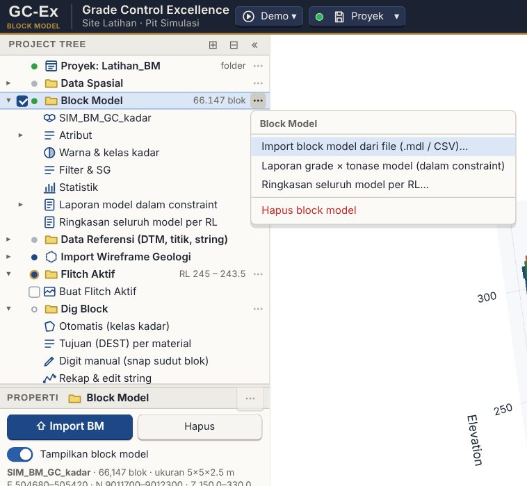
Gambar 3. Menu ⋯ node Block Model: import langsung dari file.
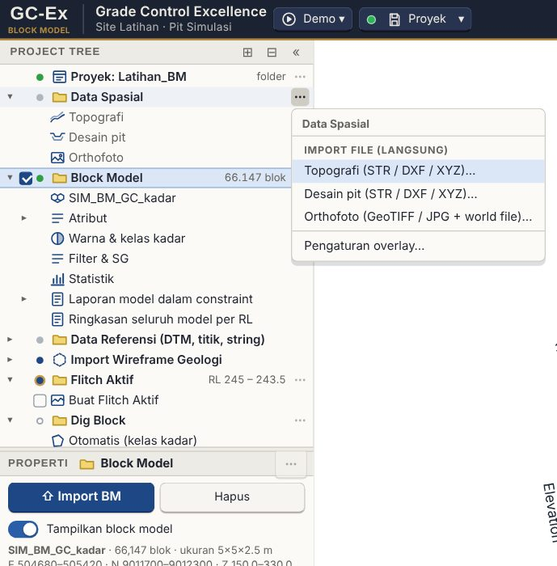
Gambar 4. Menu ⋯ Data Spasial: pilih jenis file, jendela pilih file terbuka.
Tips Permukaan topografi dan desain pit di 3D digambar satu warna seragam (bawaan). Gradasi menurut elevasi atau warna lain: panel Overlay (node Topografi / Desain pit) → Warna permukaan topo & pit.
Slicer: memotong block model dari arah mana saja
Klik tombol Slicer di bar atas; popup-nya memuat seluruh kendali sayatan (Gambar 5).
Dip (0 = plan / horizontal, 90 = tegak) dan Dip azimuth (arah kemiringan; U / T / S / B = 0 / 90 / 180 / 270°), atau preset Plan, Tegak E–W, Tegak N–S. Tombol Sayatan Garis Bebas membuka kotak Sayatan garis bebas: tarik garis di mana saja pada jendela 3D dan bidang sayatan dibuat lewat garis itu.
Lebar slab = tebal irisan; Langkah = jarak satu klik Mundur / Maju; Posisi = elevasi (plan) atau offset dari pusat bidang; Pusat bidang (E, N, RL) atau tombol Pusat data / Pusat pandangan.
Centang Potong data untuk menyembunyikan blok di luar irisan; Tampilan 2D menampilkan sayatan yang aktif sebagai penampang tanpa perspektif; Tampilan 3D kembali ke jendela 3D — kedua tombol hanya mengganti cara melihat. Semua pengaturan sayatan ada di popup ini (node Sayatan di Pengaturan tampilan sudah dihapus). Statistik dan tonase mengikuti blok yang terpotong.
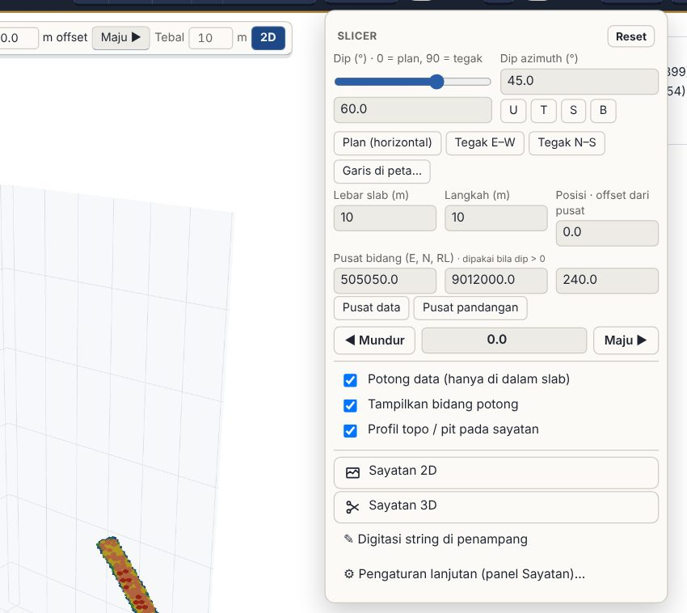
Gambar 5. Popup Slicer Block Model: dip 60° ke azimuth 45°; hanya blok di dalam slab yang digambar.
Tips Permukaan topografi & desain pit digambar dari seluruh titik survei (TIN penuh), dan orthofoto digambar setajam anggaran profil Kinerja (Resolusi = Otomatis; makin dekat zoom, makin halus). Bila tampilan terasa berat, turunkan profil Kinerja ke Hemat.
Kinerja & grafis
Bila aplikasi terasa tersendat saat berganti panel atau atribut warna, buka Pengaturan tampilan › Tampilan & performa. Kotak Kinerja & grafis (Gambar 6) menyebutkan apakah kartu grafis benar-benar dipakai (bila tertulis render perangkat lunak, kubus 3D digambar oleh prosesor dan semuanya lambat — ikuti saran di kotak itu) dan mencatat jeda 12 aksi terakhir (sinkron = layar terkunci oleh JavaScript, long task = total kerja berat 1,5 detik sesudah klik termasuk render 3D; merah = terasa, > 0,4 detik). Salin laporan kinerja menyalin semuanya sebagai teks untuk dikirim saat melapor. Berganti atribut warna yang pernah ditampilkan kini seketika karena geometri kubusnya disimpan (6 atribut / filter terakhir).
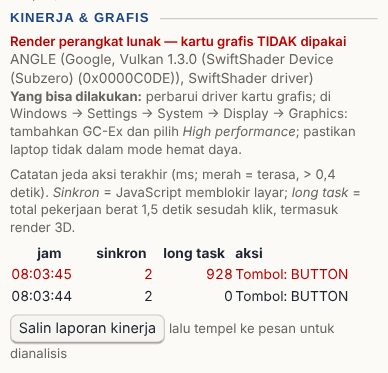
Gambar 6. Kotak Kinerja & grafis di panel Tampilan & performa. Di komputer uji otomatis ini tertulis render perangkat lunak, karena memang tanpa kartu grafis.
Bagian I · Persiapan & data
4Mengenal tampilan
Data & isian bab ini
Berkas: lanjutan — SIM_BM_GC_kadar.csv sudah terbuka
Filter tampilan
AU_GC ≥ 0,19 (Block Model → Filter & SG)
Di kiri ada Project Tree (urut langkah kerja, angka 1–10) dan Properti (isi node yang dipilih). Bilah atas: logo GC-Ex / BLOCK MODEL, Grade Control Excellence + nama project site, Proyek, arah pandang, tombol Slicer (semua pengaturan sayatan, Tampilan 2D / 3D), Ortho, Layer, Gelap, PNG.
Gambar 7. Bilah atas GC-Ex Block Model.Gambar 8. Block model dengan filter AU ≥ 0,19 (Block Model → Filter & SG): ore shoot kadar tinggi (merah) di tengah vein.
Project Tree → Block Model → Warna & kelas kadar: kelas diskrit dan warnanya (Gambar 9).
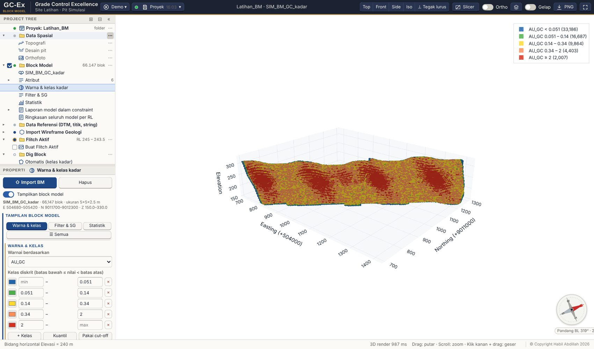
Gambar 9. Warna & kelas kadar AU.
Bagian II · Flitch & dig block
Inti pekerjaan harian grade control: memilih flitch yang sedang ditambang, membentuk dig block, merapikannya, lalu menerbitkan dig plan untuk operasi. Urutannya mengikuti node Project Tree.
Bagian II · Flitch & dig block
5Flitch aktif & Sayatan 2D
Data & isian bab ini
Berkas: lanjutan — block model yang sama
Tinggi flitch
2,5 m (= tinggi blok, jadi satu flitch = satu lapis blok)
RL atas
241,25 → flitch RL 241,25 – 238,75
Tombol
Terapkan flitch (buka Penampang 2D)
Project Tree → Flitch Aktif: isi Tinggi flitch 2,5 dan RL atas 241.25 (Gambar 10).
Klik Terapkan flitch: GC-Ex membuka Sayatan 2D tampak atas pada RL tengah flitch; blok dilukis sebagai gambar sehingga zoom & geser ringan.
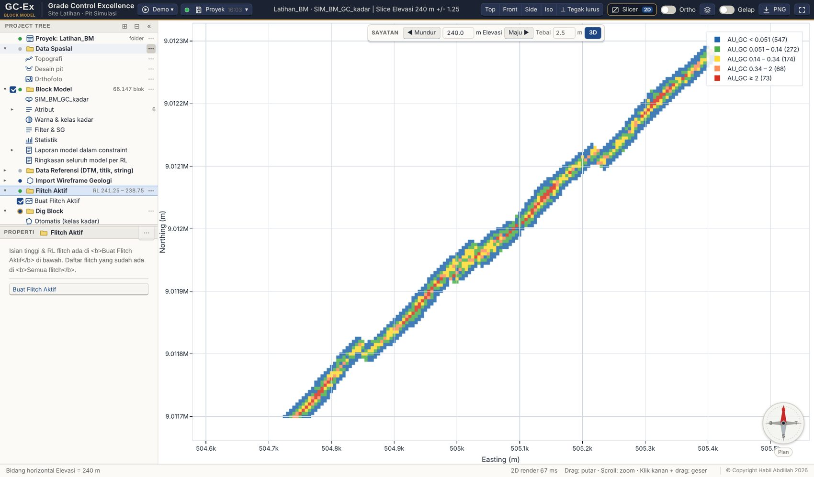
Gambar 10. Flitch RL 241.25 – 238.75 di Sayatan 2D.
Tips Menu Sayatan → Pilih arah sayatan di tampak atas membuka jendela 3D tampak atas; tarik garis P1 → P2 langsung di atas data untuk sayatan vertikal.
Bagian II · Flitch & dig block
6Orthofoto resolusi tinggi di flitch
Data & isian bab ini
Berkas: orthofoto tidak termasuk paket data latihan (berkas raster besar). Pakai orthofoto pit Anda sendiri: .tif + world file, atau .jpg + .jgw
Import
tombol ⋯ node Data Spasial → Orthofoto → Import orthofoto… (langsung, tanpa kembali ke layar Mulai; boleh juga di layar Mulai)
Langkah
buka flitch (Penampang 2D), lalu centang node Orthofoto (latar plan / flitch)
Isian
opasitas 50–75% dari menu node
Yang dilihat
badge node menyebut resolusi yang dipakai; zoom masuk membuat angka m/piksel mengecil dan gambar makin tajam
Saat menggambar dig block di flitch, yang paling membantu adalah melihat foto lapangannya di bawah poligon: batas material yang terlihat di muka galian, jalan angkut, batas pekerjaan shift sebelumnya. Orthofoto tampil sebagai gambar latar pada Penampang 2D horizontal — dan flitch adalah penampang horizontal.
Sejak 0.24.24 latar itu dipotong sesuai tampilan dari piramida resolusi tinggi, bukan satu gambar beresolusi tetap. Artinya zoom masuk membuatnya makin tajam; sebelumnya gambar dibuat sekali seukuran ortho penuh lalu dipakai terus, sehingga di flitch sempit (misal 50 × 50 m dari ortho 1,5 km) tampak buram dan zoom tidak menolong.
Node
Orthofoto (latar plan / flitch) di bawah Flitch Aktif
Centang
nyala / mati tanpa pergi ke menu Overlay
Menu
opasitas 100 / 75 / 50 / 25%
Badge
resolusi yang sedang dipakai, mis. LOD 2048 px @ 0,12 m/px
Tips Opasitas 50–75% biasanya paling enak: foto masih terbaca, warna kelas kadar blok tetap jelas di atasnya.
Perhatian Latar ini hanya digambar pada penampang horizontal (plan / flitch). Pada penampang vertikal tidak ada orthofoto — badge node akan menyebut hanya di plan 2D.
Bagian II · Flitch & dig block
7Dig block otomatis
Data & isian bab ini
Berkas: lanjutan — flitch RL 241,25 – 238,75
Unsur kelas
AU_GC
Kelas 1
dari 0,4 s/d < 1 → string 14, material LG
Kelas 2
dari 1 s/d maks → string 17, material HG
Tujuan (DEST)
LG bukan sulfida → S340 · LG sulfida → S370 · HG → R418
Jarak gabung tubuh
3 m
Hasil yang seharusnya
68 dig block di flitch ini
Project Tree → Dig Block → Otomatis (kelas & tujuan). Aturan kelas (string number, warna, material) dan Tujuan (DEST) per material diatur di sini.
Klik Buat dig block otomatis (Gambar 11).
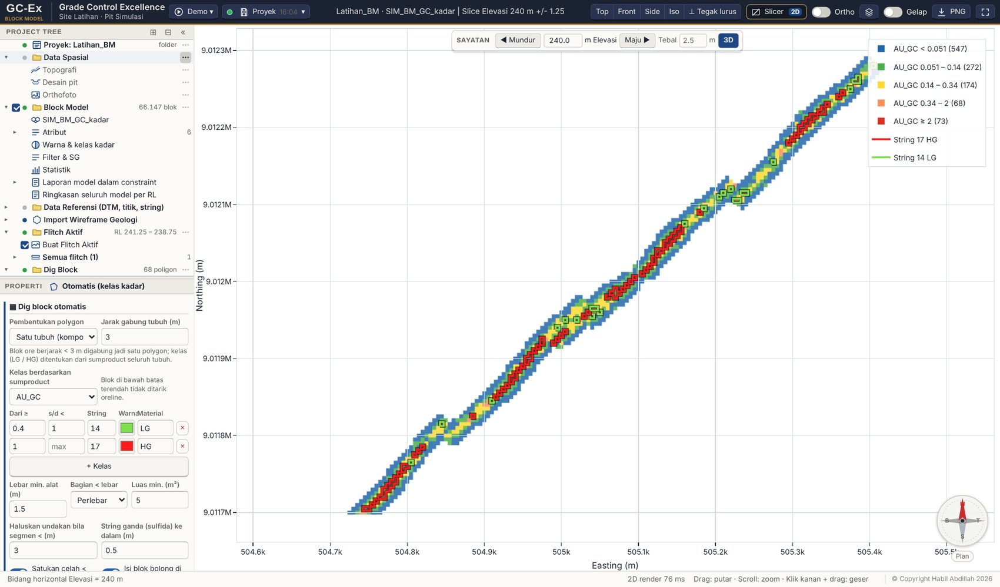
Gambar 11. 68 dig block otomatis di flitch RL 241.25 – 238.75: HG → R418, LG → S340.
Mengapa? Dig block mengikuti batas sudut blok GC, lalu dihaluskan dan celah kecil disatukan sesuai lebar alat gali.
Bagian II · Flitch & dig block
8Additional flagging (garis ganda)
Data & isian bab ini
Berkas: lanjutan — memakai kolom S_PCT dan ZN_PPM dari berkas yang sama
Aturan 1
nama Ore Sulfide — atribut S_PCT> 0,8
Aturan 2
nama Zn tinggi — atribut ZN_PPM> 500
Hasil yang seharusnya
53 dari 68 dig block mendapat flag di flitch ini
Additional flagging menggantikan aturan “sulfida / material SxS”. Satu aturan = nama flag + unsur + operator + COG. Bila komposit unsur di dalam poligon (rata-rata tertimbang tonase) melewati COG, seluruh poligon diberi flag dan digambar dengan garis ganda.
Klik Perbarui garis ganda. Poligon ber-flag mendapat garis kedua di sebelah dalam (Gambar 13).
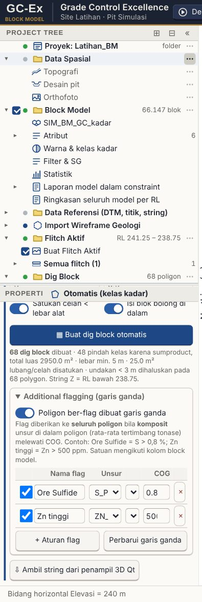
Gambar 12. Tabel aturan additional flagging.
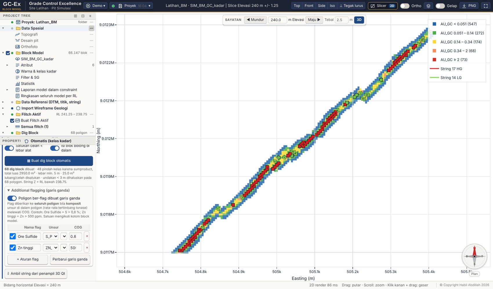
Gambar 13. Dari 68 dig block, 53 ber-flag Ore Sulfide (komposit S > 0,8 %) dan bergaris ganda.
Tips Kolom Flag? di aturan Tujuan (DEST) memakai flag ini, mis. LG + flag → stockpile sulfida. Nama flag ikut di label dig plan, PDF, daftar dig block (⚑) dan Project Tree. Proyek lama: pengaturan sxs & batas otomatis menjadi aturan Ore Sulfide.
Bagian II · Flitch & dig block
9Digit manual & rekap string
Dig Block → Digit manual (snap sudut blok): klik Mulai, klik sudut-sudut blok di Sayatan 2D, klik titik pertama atau tekan Enter untuk menutup. Poligonnya mendapat menu yang sama dengan dig block otomatis (edit bentuk, warna, grade × tonase).
Dig Block → Rekap & edit string (Gambar 14): tabel semua string (tampil, nomor, keterangan, titik, panjang, bidang) dengan ✎ edit bentuk dan × hapus. String baru dibuat di bagian bawah panel.
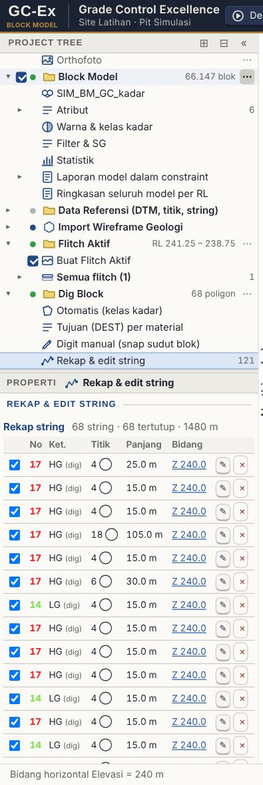
Gambar 14. Rekap & edit string.
Bagian II · Flitch & dig block
10Pemeriksaan dig block sebelum dig plan terbit
Data & isian bab ini
Berkas: lanjutan — dig block yang sudah ada
Prasyarat
lebar minimum alat diisi di Dig block otomatis (bawaan 1,5 m)
Langkah
node Pemeriksaan dig block → Periksa flitch aktif, lalu Periksa semua flitch
Hasil yang seharusnya
pada data latihan yang masih rapi: tidak ada temuan. Untuk mencobanya, tarik satu titik dig block sampai bentuknya menyempit, lalu periksa lagi
Dig plan yang cacat baru ketahuan di pit, saat alat sudah di muka galian. Node Pemeriksaan dig block memeriksanya lebih dulu, dan membagi temuan menjadi dua tingkat.
Tingkat
Artinya
CEGAH
jangan diterbitkan sebelum dibereskan
PERIKSA
perlu dilihat, belum tentu salah
Yang diperiksa
Temuan
Tingkat
Mengapa
Lebar minimum di bawah batas selektivitas alat
CEGAH
tidak praktis digali; alat akan mengambil material sebelahnya juga
Tonase nol
CEGAH
poligon tidak memuat blok model: salah posisi, salah flitch, atau tersaring filter atribut
Garis saling memotong (poligon menyilang)
CEGAH
luas dan tonase tidak bisa dipercaya
Poligon tidak tertutup
CEGAH
bukan area; tonase tidak terhitung
Tanpa tujuan material
CEGAH
truk tidak tahu harus ke mana
Luas di bawah ambang
PERIKSA
blok sangat kecil; pertimbangkan digabung
Kadar kosong
PERIKSA
blok di dalamnya berkadar −99, atau atribut kadar belum dipilih
Nama dipakai lebih dari sekali
PERIKSA
bisa tertukar di dispatch dan register
Mengapa?Lebar minimum dihitung dengan rotating calipers pada convex hull poligon — jarak terkecil antara dua garis sejajar yang mengapitnya. Bukan perkiraan luas dibagi keliling. Pada uji, persegi 10 × 2 m menghasilkan tepat 2,00 m dan segitiga tipis tepat 0,50 m, jadi angka yang Anda sampaikan ke operasi bisa dipertanggungjawabkan.
Node Pemeriksaan dig block → Periksa flitch aktif (atau semua flitch sebelum rekap mingguan).
Bereskan semua yang bertanda CEGAH.
Unduh CSV-nya bila perlu lampiran, lalu terbitkan dig plan.
Tips Dua pemeriksaan ini jarang berbunyi pada pengaturan bawaan, dan itu wajar: tanpa tujuan material hanya mungkin bila materialnya tidak cocok aturan tujuan mana pun dan tujuan cadangan kosong; nama ganda hanya mungkin bila template nama tidak memuat {NO}. Keduanya tetap diperiksa untuk menjaga keadaan yang tidak biasa.
Bagian II · Flitch & dig block
11Preset kelas kadar & tujuan material
Data & isian bab ini
Berkas: lanjutan — pengaturan kelas & tujuan dari bab Dig block otomatis
Langkah
node Preset kelas kadar & tujuan → tombol ➕ Simpan pengaturan sekarang sebagai preset… di panel
Nama preset
mis. Pit Simulasi — Nov 2026
Isi yang tersimpan
2 kelas (LG, HG), 3 aturan tujuan, lebar minimum 1,5 m, ambang sulfida
Batas kelas kadar dan aturan tujuan material diisi manual tiap kali. Akibatnya shift siang dan shift malam, atau dua orang yang berbeda, bisa memakai batas yang berbeda tanpa ada yang sadar — dan itu muncul sebagai selisih yang tidak bisa dijelaskan di rekonsiliasi.
Node Preset kelas kadar & tujuan menyimpannya sebagai preset bernama di berkas proyek.
Yang disimpan
batas kelas kadar (LG / HG / …), aturan tujuan material, lebar minimum alat, ambang sulfida, material bawaan, ambang luas
Menyimpan
pilih node, lalu tombol ➕ Simpan pengaturan sekarang sebagai preset… di panelnya, beri nama mis. Pit A — Nov 2026
Memakai
klik nama preset di menu ⋯ node, atau di anak node-nya → Pakai preset ini
Tiap preset tampil
jumlah kelas, jumlah aturan tujuan, lebar minimum, dan tanggal disimpan
Perhatian Memakai preset tidak menghapus dig block yang sudah ada, tetapi material dan tujuannya dihitung ulang dengan aturan baru. Karena itu selalu ada konfirmasi lebih dulu. Untuk rekonsiliasi yang rapi, ganti preset di awal periode, bukan di tengah.
Bagian II · Flitch & dig block
12Review flitch per flitch di Project Tree
Data & isian bab ini
Berkas: lanjutan — dua flitch
Flitch kedua
RL atas 295 → flitch RL 295 – 292,5, lalu Buat dig block otomatis lagi
Hasil yang seharusnya
RL 295–292,5: 35 dig block, 6.338 t @ 1,77 · RL 241,25–238,75: 68 dig block, 19.175 t @ 4,58
Rekap semua flitch (CSV)
103 baris dig block
Setiap menu punya node Per flitch yang dihitung dari poligon tersimpan; flitch aktif tidak berubah saat menghitung. Kerjakan flitch kedua (RL atas 295) dengan langkah yang sama, lalu tinjau keduanya.
Dig Block → Per flitch (Gambar 16): tiap flitch menampilkan jumlah DB dan ton @ kadar. Buka satu flitch: daftar poligon dengan ton @ kadar dan ⚑ flag (Gambar 17).
Klik poligon: flitch-nya dibuka di Sayatan 2D dan poligon disorot (Gambar 18). Menu …: Edit bentuk, Hapus.
Laporan Grade × Tonnage → Per flitch (Gambar 19): ton @ kadar per flitch dan per material → tujuan. Rekap semua flitch (CSV): satu baris per dig block di semua flitch.
Gambar 16. Dig Block → Per flitch.Gambar 17. Isi satu flitch: poligon dengan ton @ kadar dan flag.
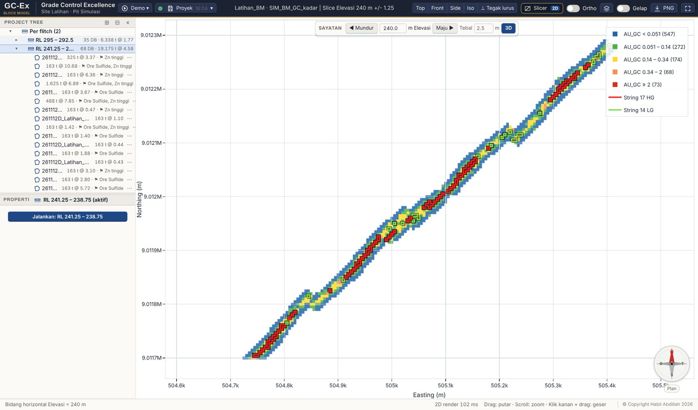
Gambar 18. Klik poligon di Project Tree: flitch dibuka dan poligon disorot.
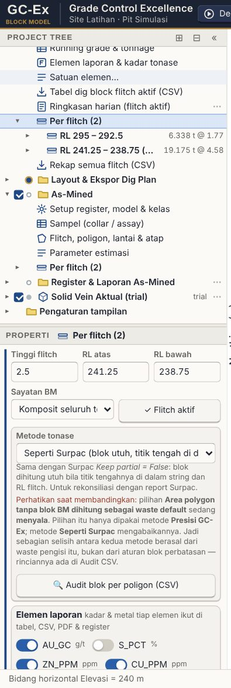
Gambar 19. Laporan → Per flitch dan Rekap semua flitch (CSV).
Flitch
Dig block
Ton
AU (g/t)
Ber-flag
295 – 292.5
35
6.338
1,77
2
241.25 – 238.75
68
19.175
4,58
53
CSV rekap berisi 103 baris (satu per dig block).
Bagian II · Flitch & dig block
13Layout & ekspor dig plan
Project Tree → Layout & Ekspor Dig Plan → Layout & plot PDF (Gambar 20): judul, skala, elemen laporan, tabel tonase; PDF siap cetak.
Export STR / DXF (Surpac) untuk string dig block; Simpan gambar PNG untuk tampilan saat ini.
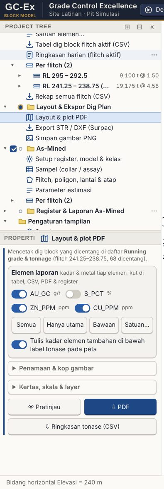
Gambar 20. Layout & plot PDF.
Bagian III · Pelaporan grade × tonase
Melaporkan tonase dan kadar dari block model dengan constraint — di bawah topografi, di dalam desain pit, per bench, per kategori, per cut-off.
Bagian III · Pelaporan grade × tonase
14Laporan grade × tonase
Data & isian bab ini
Berkas: lanjutan — flitch RL 241,25 – 238,75
Flitch
RL 241,25 – 238,75
Hasil yang seharusnya
19.175 t @ 4,58 g/t dari 68 dig block
Project Tree → Laporan Grade × Tonnage → Running grade & tonnage (Gambar 15): ton, kadar dan metal per dig block flitch aktif, dikelompokkan per tujuan.
Elemen laporan & kadar tonase: centang unsur tambahan (S_PCT, ZN_PPM, CU_PPM) agar ikut tabel, CSV, PDF dan register.
per material: HG dan LG; per tujuan: R418, S340, S370; total rencana 19.175 t, dan baris aktual bila as-mined flitch ini sudah dihitung
Laporan pagi biasanya dirakit sendiri dari beberapa tabel. Node Ringkasan harian (flitch aktif) menyusunnya sekaligus, dalam satu halaman.
Per material
jumlah dig block, ton, dan kadar semua unsur yang dicentang di Elemen laporan
Per tujuan material
tabel yang sama, dikelompokkan menurut tujuan
Rencana vs aktual
bila as-mined flitch itu sudah dihitung: ton rencana (dig block) vs aktual (as-mined), beserta selisih dan persennya
Export
CSV satu berkas berisi ketiga bagian di atas
Tips Kalau as-mined flitch itu belum dihitung, bagian rencana vs aktual akan mengatakannya terang-terangan, bukan menampilkan nol. Untuk rekap beberapa hari sekaligus, pakai Laporan periode.
Bagian III · Pelaporan grade × tonase
16Rekap dig block: multi-unsur & centroid
Data & isian bab ini
Berkas: lanjutan — memerlukan kolom S_PCT, ZN_PPM, CU_PPM
Prasyarat
centang unsurnya di Elemen laporan (Dig block)
Langkah
Dig Block → Rekap semua flitch (CSV)
Hasil yang seharusnya
103 baris berkolom AU_GC, S_PCT, ZN_PPM, CU_PPM, Metal tiap unsur, Centroid_X, Centroid_Y
Rekap dig block semua flitch (CSV) dulu hanya memuat satu kolom kadar. Untuk endapan ber-multi unsur, kolom lainnya harus diambil dari tempat lain.
Sekarang rekap itu memuat semua unsur yang dicentang di Elemen laporan, Metal tiap unsur yang satuannya memungkinkan, serta Centroid_X dan Centroid_Y tiap dig block.
Kolom
RL_atas, RL_bawah, Nama, Material, Tujuan, Luas_m2, Ton, <tiap unsur>, Metal_<unsur>, Centroid_X, Centroid_Y, Flag
Centroid
titik berat poligon (bukan titik tengah kotak pembatas), dipakai dispatch / fleet system untuk menandai lokasi blok
Bagian III · Pelaporan grade × tonase
17Pembobotan proporsi sub-blok (sb_frac)
Data & isian bab ini
Berkas: data/SIM_BM_GC_estimasi.csv — block model yang sama + kolom hasil Model Estimation Drill Hole (est_pass, est_nsamp, est_sor, est_ke, est_type, sb_frac, domain_est); 20,1% blok ber-sb_frac < 1
Import
buka proyek baru, pilih SIM_BM_GC_estimasi.csv sebagai block model
Langkah
Reporting → jalankan sekali dengan centang proporsi, sekali tanpa
Hasil yang seharusnya
8,05 juta t dengan pembobotan vs 10,75 juta t tanpa — selisih ~25%
Bila block model yang Anda pakai berasal dari Model Estimation GC-Ex Drill Hole dan pernah dipecah di batas solid (sub-blocking), setiap blok membawa kolom sb_frac: proporsi volume blok yang benar-benar berada di dalam solid.
Reporting Block Model bisa menimbang tonase dan volume dengan angka itu (cara GC-Ex), jadi blok di perbatasan dihitung sebagian. Pilihannya hanya muncul bila atribut itu ada. Bawaannya mati (sejak Block Model 0.24.68): blok dihitung utuh menurut titik pusatnya, cara Surpac, karena angka GC-Ex diaudit terhadap report Surpac.
Mengapa? Tanpa pembobotan ini, block model yang sama memberi tonase yang berbeda antara laporan di Drill Hole dan di Block Model — justru dilusi batas yang sudah diukur dengan susah payah menjadi hilang. Pada data latihan SIM_BM_GC_estimasi.csv (20,1% blok sebagian), selisihnya sekitar 25%: 8,05 juta ton dengan pembobotan vs 10,75 juta ton tanpa pembobotan.
Tips Latihannya: import data/SIM_BM_GC_estimasi.csv, buka Reporting, jalankan sekali dengan centang Cara GC-Ex: timbang volume & tonase dengan proporsi sub-blok dan sekali tanpa centang (bawaan), lalu bandingkan.
TipsBlok di batas permukaan (tab Constraint, muncul bila ada topografi / desain pit / batas DTM): bawaan Cara Surpac — titik pusat blok; blok di luar jangkauan topografi / pit / DTM tidak dilaporkan. Cara GC-Ex — proporsi volume blok membagi telapak blok perbatasan menjadi 4×4 kolom (bisa 2–8) dan menimbang tonase dengan bagian yang lolos semua batas. Tab Metode tonase menampilkan kedua cara berdampingan; untuk audit pakai baris Cara Surpac.
Bagian III · Pelaporan grade × tonase
18Laporan per desain pit & progres topo-ke-topo
Data & isian bab ini
Berkas: data/SIM_pit_fase1.dxf, SIM_pit_fase2.dxf, SIM_topo_akhir_juni.dxf, SIM_topo_akhir_juli.dxf — import lewat baris + Tambah data referensi… → Permukaan pit / topografi (DTM)… di node Data Referensi (DTM, titik, string) (tombol Muat data latihan sudah memuatnya)
Atribut & cut-off
tab ① seperti biasa (latihan: AU_GC, cut-off 0, per RL 5 m)
Mode 1 — per pit
topografi SIM_topo_akhir_juni; centang SIM_pit_fase1 lalu SIM_pit_fase2
Mode 2 — progres
atas SIM_topo_akhir_juni, bawah SIM_topo_akhir_juli
Hasil yang seharusnya
fase 1 3.384 blok / 549.900 t · fase 2 16.103 blok / 2.616.738 t · progres sebulan 2.439 blok / 396.338 t (SG 2,6)
Dua pekerjaan short term planning yang sebelumnya harus diulang-ulang: membandingkan fase pit, dan menghitung material yang benar-benar tergali bulan ini. Keduanya ada di tab ④ Pit & progres pada Reporting Block Model (atau node Per desain pit & progres topo-ke-topo di bawah Laporan).
Yang diganti hanya permukaan Tab ini memakai atribut, cut-off, pengelompokan, domain, poligon, SG dan sb_frac yang sudah diatur di tab ① dan ②. Yang diganti hanya permukaan atas & bawah, jadi angkanya sebanding dengan laporan biasa.
1. Beberapa desain pit sekaligus
Import desain pitnya (DXF / DTM Surpac): baris + Tambah data referensi… → Permukaan pit / topografi (DTM)… di node Data Referensi (DTM, titik, string). Wireframe geologi diimport terpisah di node Import Wireframe Geologi; proyek lama yang menyimpan desain pit di sana bisa dipindah lewat tombol ⋯ berkasnya → Pindahkan ke Data Referensi (permukaan pit / topo).
Pilih satu topografi untuk semua pit, lalu centang desain pit dari yang terkecil ke terbesar.
Klik Hitung per pit: satu baris per pit, dan baris tambahan = selisih terhadap pit di atasnya (berlaku untuk pit bersarang).
2. Progres topo-ke-topo
Mode Progres topo-ke-topo.
Topografi atas = survei lebih awal (mis. akhir Juni), topografi bawah = survei lebih baru (akhir Juli).
Survei yang belum ada di proyek bisa dipilih langsung dari file (tombol Pilih file topografi (STR / DXF / CSV / DTM)… di bawah tiap pilihan) — Block Model hanya menyimpan satu topografi aktif, jadi inilah cara memasukkan survei bulan sebelumnya untuk rekonsiliasi.
Biarkan Laporkan semua atribut kadar menyala agar seluruh unsur masuk laporan.
Klik Hitung progres, lalu Export CSV.
Yang dihitung
blok yang titik pusatnya di bawah topografi atas dan di atas topografi bawah
Dipakai untuk
rekonsiliasi bulanan: tonase & kadar material yang tergali menurut block model
Bukan untuk
menggantikan timbangan ROM — bandingkan keduanya, jangan salah satu dianggap benar
Bila hasilnya 0 blok
topografi atas dan bawah tertukar
Tips Untuk pelaporan bulanan rutin, kombinasikan dengan Laporan periode: progres topo-ke-topo memberi angka dari block model, laporan periode memberi angka dari poligon as-mined yang dicatat harian. Selisih keduanya adalah bahan diskusi rekonsiliasi.
Bagian IV · As-mined & rekonsiliasi
Membandingkan rencana dengan aktual: permukaan as-mined, register pekerjaan, dan rekonsiliasi flitch per flitch antara dig plan dan material yang benar-benar tergali.
Bagian IV · As-mined & rekonsiliasi
19As-mined: rencana vs aktual
Data & isian bab ini
Berkas: lanjutan — flitch RL 241,25 – 238,75
Poligon aktual
di latihan ini dibuat dari dig block HG dan LG yang digeser +0,6 m ke timur dan −0,4 m ke utara (simulasi penggalian)
Jumlah poligon
68
Tanggal & shift
isi di Default poligon berikutnya — mis. tanggal hari ini dan DS · Siang; dipakai Laporan periode
Hasil yang seharusnya
rencana 19.175 t @ 4,58 vs aktual 19.175 t @ 4,58 (metode bawaan Seperti Surpac)
Sesudah penambangan, batas aktual dicatat sebagai poligon as-mined (pick-up survey, file STR / DXF / CSV, atau digit manual) lalu dihitung dengan model GC + koreksi sampel. Di latihan ini poligon aktual dibuat dari dig block yang bergeser 0,6 m (simulasi penggalian). Dengan metode bawaan Seperti Surpac (blok utuh menurut titik tengah) pergeseran 0,6 m pada blok 5 m tidak memindahkan satu titik tengah pun, jadi rencana dan aktual sama; pilih Presisi GC-Ex di Parameter estimasi As-Mined untuk melihat pengaruh pergeseran sekecil itu.
Project Tree → As-Mined → Flitch, poligon, lantai & atap: import pick-up / boundary atau digit manual (Gambar 21).
As-Mined → Per flitch (Gambar 22): tiap flitch menampilkan selisih Δ; di dalamnya Rencana (dig block) dan Aktual (as-mined) beserta poligon. Flitch RL 241.25 – 238.75: rencana 19.175 t @ 4,58, aktual 19.175 t @ 4,58.
Klik flitch: dibuka di Sayatan 2D dengan dig block (rencana) dan poligon as-mined (aktual) bertumpuk (Gambar 23).
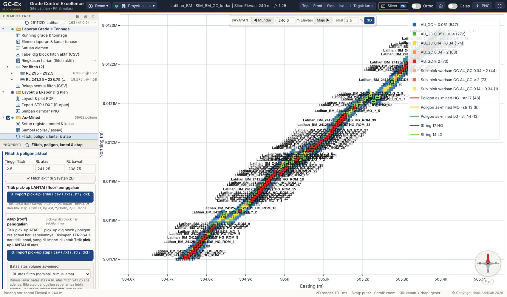
Gambar 21. Poligon as-mined di flitch aktif.
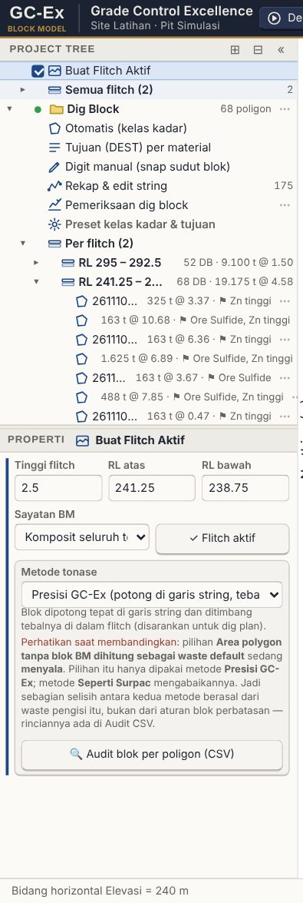
Gambar 22. As-Mined → Per flitch: selisih, rencana dan aktual.
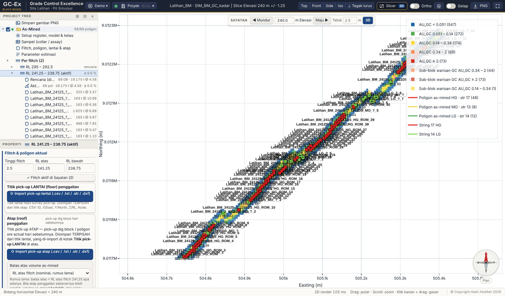
Gambar 23. Rencana (dig block) dan aktual (as-mined) bertumpuk.
Mengapa? Kadar aktual lebih rendah karena poligon aktual bergeser keluar dari vein sempit: dilusi. Inilah yang ingin dilihat rekonsiliasi flitch per flitch.
TipsPop-up. Daftar poligon per flitch (Register poligon) tampil sebagai jendela pop-up secara bawaan; Layout & export, Titik atap & Poligon per flitch (Solid Vein), daftar dig block (Running grade & tonnage) dan hasil Reporting punya tombol ⧉ Pop-up: bagian itu pindah ke jendela yang bisa digeser, diperkecil (–) dan ditutup (×, kembali ke panel), jadi panel tidak perlu di-scroll naik-turun.
TipsReport harian & kunci tanggal-shift. Node Register untuk database (report harian & kunci): pilih tanggal dan shift, periksa tabel tonase & kadar, lalu Salin ke Excel / Register CSV / Kirim ke workbook di bawahnya (hanya poligon tanggal-shift itu). Begitu laporan itu keluar, poligonnya terkunci otomatis 🔒. Pilihan Periode juga menyediakan report mingguan, bulanan dan rentang tanggal (diikat tanggal & shift poligon, semua flitch); report periode tidak mengunci. Bagian ini tampil sebagai jendela pop-up. Poligon terkunci tidak dihitung ulang walau flitch yang sama digali lagi kemudian, dan tidak bisa diedit sampai kuncinya dibuka. Poligon baru yang menimpa poligon terkunci diberi peringatan dan area tampalannya bisa dikurangi otomatis.
TipsRegister untuk database punya node sendiri di Register & Laporan As-Mined: Salin ke Excel (kolom input register), Register CSV, dan Kirim ke workbook register Excel. Node As-Mined › Per flitch membuka flitch itu dan langsung menampilkan panel As-Mined-nya (poligon / register), tidak kembali ke panel Buat Flitch.
TipsTitik atap saat mendigit. Di plan as-mined, titik pick-up atap (OB) digambar sebagai × ungu bersama titik lantai (+), dan kursor digit menempel ke keduanya. Tombol Tampil di jendela: Titik lantai / Titik atap di atas tombol Digit mematikan salah satu lapisan supaya plan tidak penuh; titik yang disembunyikan tidak ditempeli kursor dan hitungan tidak berubah. Titik atap milik flitch = titik dari file yang RL flitch di namanya sama dengan flitch aktif.
TipsPick-up OB dalam CSV.Import boundary menerima CSV pick-up (ID, X, Y, Z, kode): titik berurutan menjadi satu poligon, dan RL flitch, tanggal serta pit dibaca dari nama file (mis. ACT_SO261106OB_272-5_271_Z3.csv = RL 272,5–271, 6 Nov 2026, pit Z3). Titiknya sekaligus menjadi titik atap. Kelas kadar As-Mined mengikuti aturan block model .mdl (tombol Ambil dari block model), dan tonase memakai kolom SG block model .mdl bila ada. Material di luar poligon tidak dihitung.
Tips Menu klik-kanan flitch Buka daftar poligon as-mined flitch ini hanya membuka daftar Register; dig block tidak pernah diubah menjadi as-mined. Rencana dan aktual bertemu hanya di laporan Rencana vs Aktual.
Titik lantai yang tidak dipakai selalu dilaporkan Mode Ikuti lantai pick-up: titik lantai dan titik atap dibedakan dari berkasnya, lalu disaring pita elevasinya sendiri (lantai: RL bawah − 2 m s/d RL bawah + 0,6 × tinggi flitch). Panel Lantai melaporkan berapa titik di pita dan berapa yang tidak dipakai, menyebut poligon yang jatuh ke RL bawah nominal (< 3 titik), dan memperingatkan luas yang atapnya menembus lantai (tebal dihitung nol).
Bagian IV · As-mined & rekonsiliasi
20Register, 3D hasil kerja & rekonsiliasi
Project Tree → Register & Laporan As-Mined → Register poligon (Gambar 24): kode poligon, BCM, ton, kadar, ritase; Kirim register ke Excel, CSV, Report rekonsiliasi (PDF).
3D hasil kerja: prisma dig block (rencana), poligon as-mined dan solid as-mined tiap poligon — bentuk yang benar-benar dihitung, yaitu poligon di antara permukaan atap dan lantai (Gambar 25). Kamera otomatis mendekat ke poligon; tombol Zoom ke poligon flitch ini / Zoom semua poligon ada di kotak Rekap (berlaku juga di plan 2D). Kotak Sub-blok model as-mined menggambar sub-blok ukuran penuh bila diperlukan. Rekap & model gabungan (.mdl) menggabungkan semua flitch ke satu block model Surpac.
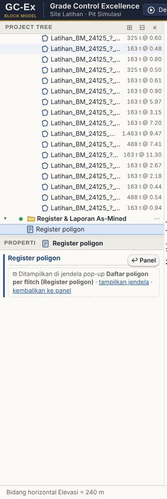
Gambar 24. Register poligon as-mined.Gambar 25. 3D hasil kerja: dig block (rencana) dan as-mined (aktual).
Bagian IV · As-mined & rekonsiliasi
21Laporan periode: mingguan & bulanan
Data & isian bab ini
Berkas: register as-mined dari bab sebelumnya — tidak ada berkas yang diimpor
Prasyarat
poligon as-mined sudah punya tanggal dan shift
Latihan cepat
buat poligon di dua flitch dengan tanggal berbeda, satu DS dan satu NS
Periode
Bulan ini
Kelompokkan
coba per tanggal, lalu per shift, lalu per flitch
Target
isi mis. 30.000 ton untuk melihat persen pencapaiannya
Node Laporan periode (mingguan / bulanan) di bawah Register & Laporan As-Mined menjumlahkan apa yang benar-benar tergali dalam satu rentang tanggal, dari register as-mined.
Periode cepat
Minggu ini · Minggu lalu · Bulan ini · Bulan lalu · Kustom (dari–sampai)
Kelompokkan
per tanggal, per minggu, per shift (DS / NS), per flitch, per tujuan material, per kode ore, atau per pit
Isi tabel
jumlah poligon, ton, BCM, dan kadar semua unsur terpilih — kadar ditimbang tonase
Target
isi target ton (dan kadar) periode ini → pencapaian dalam persen, diberi warna: hijau ≥ 100%, jingga ≥ 90%, merah di bawahnya
Tren
grafik batang: per hari untuk laporan mingguan, per minggu untuk bulanan
Pembanding
periode sebelumnya dengan panjang yang sama, beserta selisih ton dan persennya
Export
CSV memuat tabel, total, target & pencapaian, tren, dan periode pembanding
Mengapa? Kadar dijumlahkan dengan mesin yang sama dengan register dan PDF rekonsiliasi (ditimbang tonase), jadi angka di laporan periode tidak pernah berbeda dari angka di register. Itu syarat supaya laporan mingguan dan bulanan bisa dipertanggungjawabkan.
Poligon yang belum dihitung As-mined dihitung per flitch aktif. Poligon dari flitch yang belum pernah dihitung belum punya tonase, dan laporan tidak menjumlahkannya diam-diam: jumlahnya disebut terang-terangan beserta tombol Hitung semua flitch (memakai jalur yang sama dengan tombol di panel As-Mined, jadi hasilnya identik). Selalu bereskan angka itu menjadi nol sebelum laporan dikirim.
Pastikan poligon as-mined sudah diisi tanggal dan shift-nya (panel As-Mined → Terapkan ke flitch ini mengisinya sekaligus).
Buka node Laporan periode, pilih periodenya.
Bila ada peringatan poligon belum dihitung, tekan Hitung semua flitch.
Isi target ton bila ada, pilih pengelompokan, lalu Hitung.
Unduh CSV untuk lampiran laporan mingguan / bulanan.
Bagian IV · As-mined & rekonsiliasi
22Solid Vein Aktual (trial): tubuh vein yang benar-benar tergali
Data & isian bab ini
Berkas: titik pick-up atap galian (CSV: ID, X, Y, Z, kode — atau STR / DXF); gambar di bab ini memakai poligon sintetis
Jarak sambung maks
8 m
Metode sambung
Luas permukaan minimum
SG
2,6
Node Solid Vein Aktual (trial) berada paling bawah di Project Tree, terpisah dari As-Mined. Isinya dikelompokkan per Periode. Hasilnya solid wireframe tertutup tubuh vein yang tergali: poligon tiap flitch disambung ke flitch di bawahnya dengan cara kerja Surpac (triangulate between segments), lalu divalidasi tertutup dan dihitung volumenya.
Klik + Tambah periode… (atau tombol + Periode di panel), beri nama, isi rentang tanggal bila poligonnya akan diambil dari register as-mined.
Titik atap: Import titik atap (boleh banyak file sekaligus). Tabelnya satu baris per file; RL atas / RL bawah flitch dibaca dari nama file (mis. …_235-5_234_… = RL 235,5–234) dan bisa dikoreksi. Selesai import, plan flitch file terakhir langsung terbuka dan titiknya siap didigit. Mencentang file atau menekan Buka menjadikan flitch file itu flitch kerja Solid Vein dan langsung membuka plan-nya. Flitch kerja ini milik menu Solid Vein sendiri: tidak mengubah flitch Dig Block / As-Mined dan tidak perlu kembali ke menu itu. RL min / RL maks hanya diisi bila ingin menyaring elevasi secara manual. Import ulang file bernama sama mengganti titik file itu (pick-up susulan atau koreksi). Titik menu ini disimpan sendiri — tidak berbagi data dengan As-Mined maupun Dig Block.
Poligon per flitch: Digit poligon membuka plan flitch kerja (Tinggi flitch / RL atas / RL bawah diisi di bagian ini, atau pilih tombol Flitch dari file titik); kursor snap ke titik atap; klik titik pertama lagi (atau Enter) untuk menutup. Satu poligon untuk tiap pulau galian di tiap flitch. Pindah flitch, ulangi. Garis luar otomatis membuat usulan poligon dari gugus titik tiap file (atur Sisi terpanjang); periksa hasilnya di plan. Tombol ✎ di baris poligon membuka edit titik: seret titik untuk menggeser (menempel ke titik atap), seret kotak kecil di tengah sisi untuk menyisip titik, klik ganda / klik kanan titik untuk menghapus, lalu Selesai.
Parameter solid: Jarak sambung maks — dua poligon di flitch berurutan disambung bila jarak datarnya tidak lebih dari nilai ini; lebih jauh berarti pulau terpisah yang ditutup sendiri. Flitch tanpa poligon = solid putus. Poligon yang bercabang ke dua poligon di bawahnya dibelah otomatis.
Klik Bangun solid, lalu Lihat di 3D (zoom ke vein): kamera didekatkan ke garis poligon dan tubuh solidnya, dan pemotongan slab dimatikan supaya seluruh flitch tampak (Gambar 26).
Tabel hasil: tiap pulau dengan RL, jumlah flitch, tanda tertutup (✓), volume dan tonase (volume × SG). Ekspor DTM + STR Surpac, DXF 3DFACE, CSV volume.
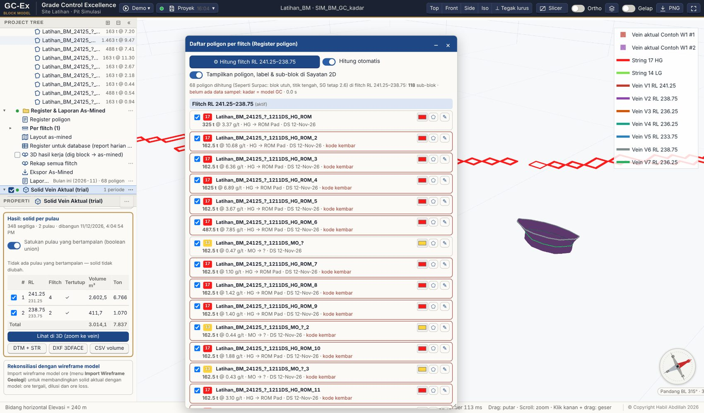
Gambar 26. Solid Vein Aktual di 3D: garis poligon tiap flitch dan dua pulau solid tertutup; pulau besar bercabang dua di flitch ketiga.
Satukan pulau & rekonsiliasi dengan model (Block Model 0.24.71)
Satukan pulau yang bertampalan (boolean union) — centang di atas tabel hasil, bawaan menyala. Sesudah loft cara Surpac, potongan solid yang saling menembus (poligon bertampalan yang tidak bisa digabung 2D, pertemuan banyak poligon, mode Kumulatif) disatukan menjadi satu tubuh tertutup, seperti Solid › Boolean › Union di Surpac: volumenya tidak lagi terhitung dua kali dan ekspor DTM + STR berisi satu solid valid. Pulau yang tidak bertampalan tidak diubah.
Rekonsiliasi dengan wireframe model (bagian paling bawah panel): centang wireframe model ore (dari Import Wireframe Geologi), isi Lebar zona penilaian ore loss (bawaan 3 m), lalu Hitung rekonsiliasi. Hasilnya tiga solid dan volumenya: Ore tergali = aktual ∩ model, Dilusi = aktual − model, Ore loss = model di zona penilaian yang tidak tergali. Zona penilaian = poligon aktual tiap flitch diperlebar selebar itu, dari RL bawah sampai RL atas flitch, supaya ore model yang memang belum ditambang tidak dihitung hilang. Kolom Blok BM menghitung tonase dan kadar block model di dalam tiap bagian (blok utuh, cara Surpac). Ketiganya bisa ditampilkan di 3D dan diekspor DTM + STR / CSV.
TipsReport block model dalam solid. Sub-node Report block model dalam solid di tiap periode menghitung grade × tonase block model resmi (blok utuh, titik pusat di dalam solid, cara Surpac) di dalam solid periode itu — per cut-off, per pulau dan per flitch — dalam jendela pop-up dengan Salin ke Excel / CSV. Cut-off date mengikuti tanggal periode; centang Kumulatif bila poligon periode sebelumnya ikut.
Tips Garis poligon semua flitch dan solidnya selalu tampil di jendela 3D (tidak ikut terpotong slab) selama centang node Solid Vein Aktual menyala (titik atap hanya tampil saat node ini dibuka). Tiap pulau punya centang sendiri di tabel hasil dan di Project Tree. Dengan Daftarkan ke Wireframe geologi, solid juga muncul di sayatan 2D dan bisa dipilih sebagai batas domain di Reporting Block Model.
TipsData susulan. Bila minggu berikutnya ada pick-up baru di flitch yang sama, import filenya (file lama tetap), digit poligon barunya, lalu Bangun solid lagi — seluruh solid periode dibangun ulang dari semua poligon; panel menandai bila solid belum diperbarui. Bila data baru ditaruh di periode baru, centang Kumulatif supaya poligon periode sebelumnya ikut disambung. Poligon bertampalan di flitch yang sama (dig block dipasang dua kali karena lantai belum tuntas) digabung otomatis jadi satu tubuh dengan atap = permukaan tertinggi, sehingga tampalan tidak terhitung dua kali (bisa dimatikan di Parameter solid).
CatatanMetode sambung mengikuti Surpac: Luas permukaan minimum (bawaan), Equi-angular, Proporsional keliling. Semua titik poligon dipakai apa adanya (tidak dihaluskan). Z atap tiap sudut poligon diambil dari triangulasi (TIN) titik pick-up atap — interpolasi linear dalam segitiga seperti DTM Surpac, IDW radius hanya cadangan di luar jangkauan titik — atau datar di RL atas flitch; pulau terbawah diteruskan tegak sampai RL bawah flitchnya. Fitur ini masih trial: bandingkan dulu volumenya dengan Surpac sebelum dipakai untuk laporan resmi.
Bagian V · Pembaruan
Ringkasan yang baru pada versi terakhir, untuk pembaca yang sudah memakai versi sebelumnya.
Bagian V · Pembaruan
23Yang baru di 0.24
Perbaikan GC-Ex Block Model 0.24 berpusat pada satu keluhan: digitasi manual dulu terasa kalah dari dig block otomatis. Sekarang keduanya setara, dan seluruh hasil kerja — dari dig block sampai as-mined — bisa ditinjau dan diedit dari satu tempat.
Yang berubah
Di tutorial ini
Digitasi manual setara otomatis: Enter menutup string, poligon mendapat menu edit bentuk, warna, grade × tonase
Bab 9
Poligon as-mined dapat diedit (bentuk & warna), register poligon dapat diubah warnanya
Bab 19, Bab 20
Subnode per flitch di Project Tree untuk audit / review langsung ke flitch yang dimaksud
Bab 12
3D hasil kerja dig block → as-mined dan rekap as-mined satu berkas .mdl
Bab 20
Penampang Sayatan seragam dengan GC-Ex Drill Hole Ultimate; tanpa jeda saat zoom (segmen garis digabung, kotak blok 2D dirapatkan; garis putus-putus merah pada dig block tidak muncul lagi)
Orthofoto disusun menjadi piramida LOD; warna diambil dari tingkat yang sepadan dengan kerapatan tampilan dan resolusi mesh mengikuti luas area yang terlihat, jadi zoom masuk otomatis makin detail tanpa menambah beban. Kotak Resolusi (m) di panel orthofoto kini berarti batas paling halus. Tampilan disegarkan ±0,3 detik setelah zoom / geser berhenti. Perhitungan laporan tidak berubah: grid elevasi cepat hanya dipakai untuk tampilan.
Sebelum
Sesudah
Mesh ortho, zoom 10 m
1 m/titik · 592 ms
0,1 m/titik · 3 ms
200.000 pembacaan elevasi
512 ms
14 ms
Tips Klasifikasi keyakinan, kerangka blok AOI, estimasi waste dan sub-blocking ada di GC-Ex Drill Hole Ultimate (Tutorial Modelling & Estimasi). Block model hasilnya (.mdl) dibuka di sini untuk flitch, dig block dan as-mined.